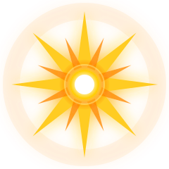

Making a Check
When a character attempts an action with meaningful risk, they make a check by combining an Approach with a Skill. The Approach determines the character's method, while the Skill reflects training and experience.
Every check uses two types of dice:
- Approach Dice (d6): Represent natural talent, instinct, or raw capability.
- Skill Dice (d12): Represent practiced technique, drilled reflexes, and specialized knowledge. These dice have stronger faces and roll better overall.
Each die face can show one or more of the following symbols:
- Success ()
- Opportunity ()
- Strife ()
- Explosion (

)
Certain results only appear on Skill Dice.
Possible Faces
Approach Dice (d6)
- Success
- Success + Strife
- Opportunity
- Opportunity + Strife
- Explosion + Strife (rare)
- Blank
Skill Dice (d12)
- Success
- Success
- Success + Strife
- Success + Strife
- Success + Opportunity
- Opportunity
- Opportunity
- Opportunity
- Explosion
- Explosion + Strife
- Blank
- Blank
Rolling Step by Step
STEP 1
Build Your Dice Pool
Choose an Approach and a Skill that apply to your action.
- Roll a number of Approach Dice equal to your Approach rating.
- Roll a number of Skill Dice equal to your Skill rating.
Both sets of dice are rolled together.
STEP 2
Apply Rerolls
If you have an effect, talent, or item that allows rerolling, use it now before choosing which dice to keep.
STEP 3
Keep Dice
After all rerolls, choose which dice to keep.
You may keep a number of dice up to your Approach rating.
Any die showing Explosion counts as a success and immediately rolls an additional die of the same type. The bonus die from an Explosion does not count toward your kept-dice limit and may be kept freely.
STEP 4
Resolve Symbols
Once you have chosen your kept dice (including any Explosion dice), total the symbols:
- Successes: Compare to the action's Target Number (TN). Meeting or exceeding the TN means the action succeeds. Falling short means the action fails.
- Opportunities: Spend on special effects providing tactical advantages, environmental benefits, or unique outcomes determined by the skill or situation.
- Strife: Add all Strife generated to your character's current Strife total. Strife reflects stress, emotional pressure, or overcommitment during the action.
Target Numbers in Play
Target Number Reference
1
Routine Action
Simple tasks with little resistance, such as opening an unsecured crate, identifying a common piece of tech, or vaulting a low obstacle.
2
Standard Challenge
Typical field actions that require attention, such as keeping steady aim in poor lighting, bypassing a civilian-grade lock, or navigating cluttered terrain at speed.
3
Difficult Task
Demands skill, preparation, or decisive execution, such as hacking a military terminal, stabilizing a wounded ally under fire, or breaching a reinforced doorway efficiently.
4
Serious Obstacle
Requires strong technique or an inspired approach, such as outmaneuvering a trained opponent, rewiring damaged equipment mid-operation, or crossing exposed ground under hostile surveillance.
5
Extreme Feat
At the outer edge of what a trained combatant or T-Doll can accomplish, such as snapping off a pinpoint shot through heavy debris, defeating active security protocols during an alert, or performing high-speed maneuvers in collapsing structures.
6+
Exceptional Achievement
Reserved for extraordinary moments. Actions at this level reshape the engagement, turn failure into opportunity, or showcase a character's highest potential.
Assistance
Characters often work together to accomplish tasks. When one character dedicates their effort to helping another, use the following rules.
Providing Assistance
When a character makes a roll, one or more allies may support them.
- If the assisting character has 1 or more ranks in the Skill being used, the acting character adds +1 Skill Die to their pool.
- If the assisting character has 0 ranks in that Skill, the acting character adds +1 Approach Die instead.
Each assisting player must describe how their character helps. The GM decides whether the assistance is legitimate and whether the assisting character can meaningfully contribute.
Influence on the Roll
After the dice pool is rolled and any rerolls are used:
- When choosing dice to keep, the acting character may keep +1 additional die per assisting character. This reflects improved positioning or coordinated effort.
- During symbol resolution, each assisting character may take 1 Strife to remove 1 Strife from the acting character's kept dice.
The GM may also allow a relevant advantage, item, or situational benefit from one assisting character if the fiction supports it.
Limits on Assistance
The GM determines how many characters can assist based on the situation. Physical space, timing, and the nature of the action often limit assistance to one helper, though more may be appropriate during large coordinated tasks.
Bonus Successes and Shortfall
Some tasks require knowing how well a character succeeds or how badly they fail.
Bonus Successes
If a character succeeds on a check, their bonus successes are the number of Success symbols (including those from Explosions) exceeding the Target Number. Bonus successes can improve the result, speed up completion, increase damage, strengthen positioning, or trigger effects defined by Skills, equipment, or techniques.
Shortfall
If a character fails a check, their shortfall is calculated as:
Shortfall = TN – total Successes
Shortfall can determine the severity of a complication, how badly the situation escalates, or how much ground is lost.
Checks to Resist Effects
Some effects allow the target to resist by making their own check.
When a character attempts an action that imposes harmful or forceful consequences on a target (such as throwing someone, hacking their system, or overwhelming their senses), the target may attempt a resistance check using the Approach and Skill that best reflects their method of countering it.
- If the target succeeds, they avoid or reduce the effect.
- If the target fails, the effect applies as normal, often modified by the attacker's bonus successes.
Setting the TN for Resistance
If an effect does not list a TN for resistance, the GM sets one appropriate to the situation. If the GM wants to reflect the aggressor's strength or precision, they may increase the TN by the attacker's bonus successes.
This models stronger attacks being harder to resist while still leaving room for dramatic reversals.